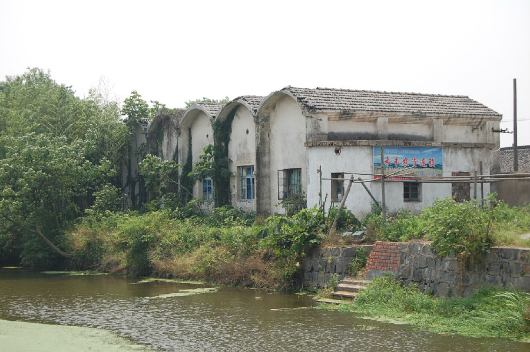

嘉兴市文物保护网 · 市级文物保护点 · 2020-11-06 · 原文

泰石桥村拱顶储备粮仓位于嘉兴市秀洲区洪合镇泰石村11组，据其形制判断，建于二十世纪六十年代，是村民自用的储备粮仓。坐北朝南，占地面积302平方米，面阔35.74米，进深8.45米，顶高5米。屋顶由10个拱顶连接而成，拱顶和柱子均用青砖砌成，无水泥、钢筋等材料。泰石桥村拱顶储备粮仓形制独特、是建国初期中苏友好的象征，在嘉兴地区较少见，对研究新中国初期的经济和社会具有较高的历史价值。2009年公布为嘉兴市文物保护点。